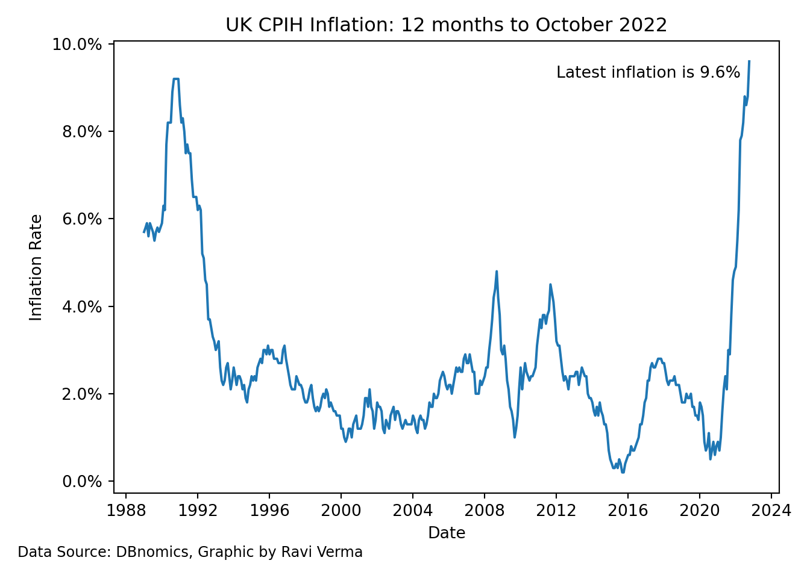

# install.packages("rdbnomics")
library(rdbnomics)Warning: package 'rdbnomics' was built under R version 4.2.2Visit <https://db.nomics.world>.Ravi Verma
January 12, 2023
Let’s install the package DBnomics which contains a plethora of macroeconomic data.
Warning: package 'rdbnomics' was built under R version 4.2.2Visit <https://db.nomics.world>.We’re interested in using the official inflation data by the Office for National Statistics which is the official provider of UK economic statistics.
Specifically we want CPIH data.
As we’re doing the plotting in Python we want to attach the dataset so we can interact with Python and use specific plotting packages with respect to Python.
Little bit of code to install pandas so we can use later on.
Checking with Python code that we can use the CPIH data we recently downloaded earlier.
@frequency dataset_code ... Title value
0 monthly MM23 ... CPIH ANNUAL RATE 00: ALL ITEMS 2015=100 NaN
1 monthly MM23 ... CPIH ANNUAL RATE 00: ALL ITEMS 2015=100 NaN
2 monthly MM23 ... CPIH ANNUAL RATE 00: ALL ITEMS 2015=100 NaN
3 monthly MM23 ... CPIH ANNUAL RATE 00: ALL ITEMS 2015=100 NaN
4 monthly MM23 ... CPIH ANNUAL RATE 00: ALL ITEMS 2015=100 NaN
[5 rows x 15 columns]Plotting the CPIH data in Python using Matplotlib.
import pandas as pd
import matplotlib.pyplot as plt
import matplotlib.ticker as ticker
import matplotlib.dates as mdates
import datetime as dt
df_CPIH_monthly = r.df_CPIH_monthly
df_CPIH_monthly['value_percentage'] = df_CPIH_monthly['value'] / 100
fig, ax = plt.subplots()
ax.plot(df_CPIH_monthly['period'], df_CPIH_monthly['value_percentage'])
ax.set_title("UK CPIH Inflation: 12 months to October 2022")
ax.set_ylabel("Inflation Rate")
ax.set_xlabel("Date")
ax.yaxis.set_major_formatter(ticker.PercentFormatter(1))
ax.annotate(text='Data Source: DBnomics, Graphic by Ravi Verma',
xy=(0, 0),
xytext=(-60, -40),
fontsize=9,
xycoords='axes fraction',
textcoords='offset points')
ax.annotate(text='Latest inflation is 9.6%',
xy=(mdates.date2num(dt.datetime(2022, 10, 0o1)), 0.096),
xytext=(-120, -10),
fontsize=10,
xycoords='data',
textcoords='offset points',
wrap=True)
plt.show()